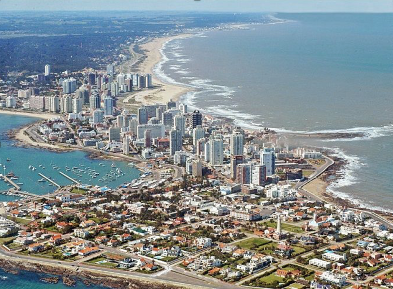
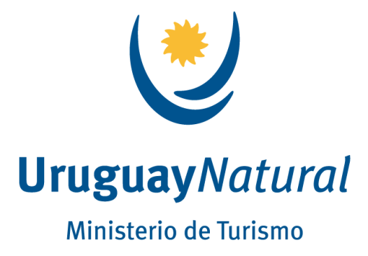

We are pleased to announce that the Society for Redox Biology and Medicine’s (SfRBM) 30th Annual Conference will be held in conjunction with the Society for Free Radical Research International’s (SFRRI) 21st Biennial Congress in Punta del Este, Uruguay on November 15-18, 2023. Join us for four days of scientific exchange, featuring cutting edge research in all aspects of redox biology and applications to both basic and translational research.
Punta del Este is full of culture, art, and world class cuisine, and known for its incredible beaches and beautiful weather. Uruguay has a very high vaccination rate and healthcare standards, and we will take all the necessary precautions to keep attendees safe and comfortable.
|  |  |
 |
CONFERENCE CHAIRS
CONFERENCE HIGHLIGHTS
IMPORTANT DATES & DEADLINES
SUPPORT FOR YOUNG INVESTIGATORS
Awards will be available to trainees and young researchers based on merit of abstract submission. We will also award a few complimentary registrations to members from countries who have not traditionally been able to participate in this conference.
8365 Keystone Crossing
Suite 107
Indianapolis, IN 46240
(317) 205-9482 PHONE
(317) 205-9481 FAX
info@sfrbm.org


® Copyright 2023 Society for Redox Biology and Medicine
{kind=link}